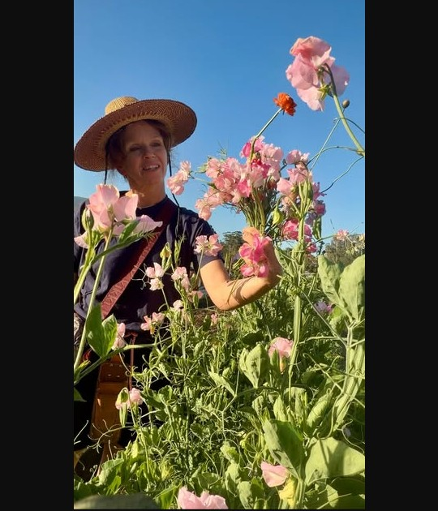
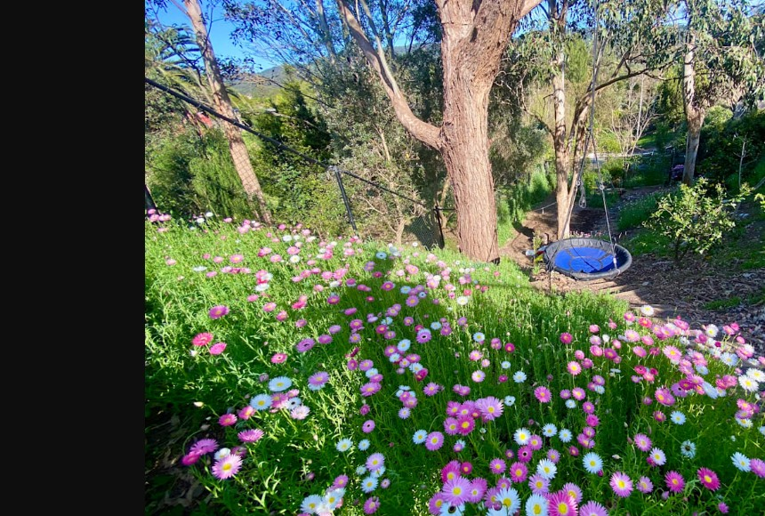
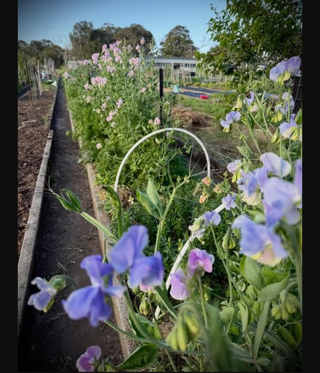
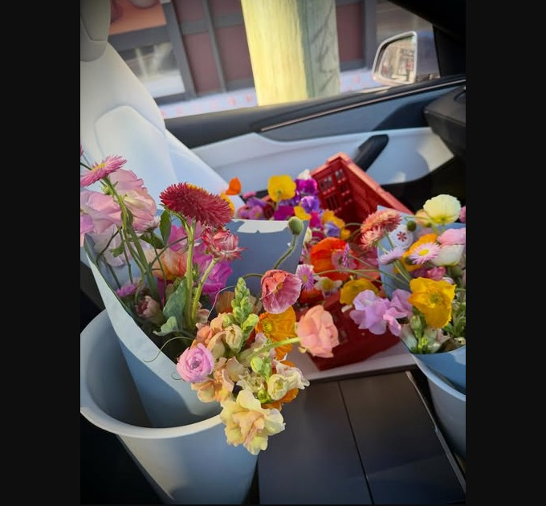
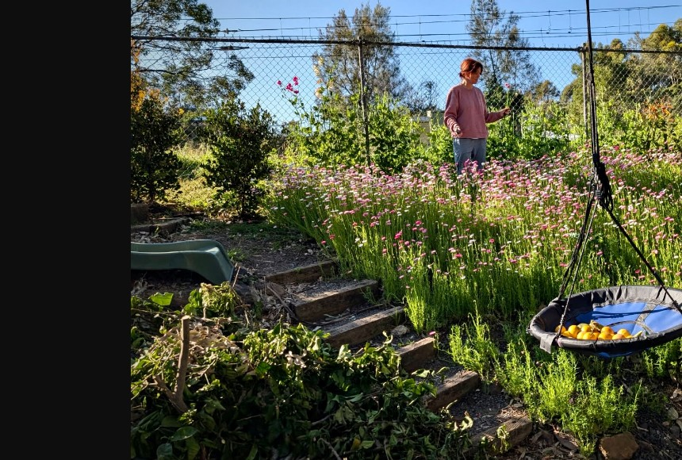
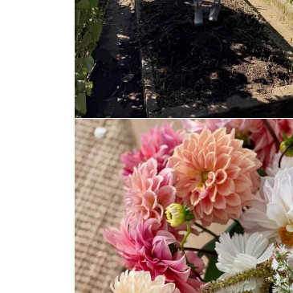
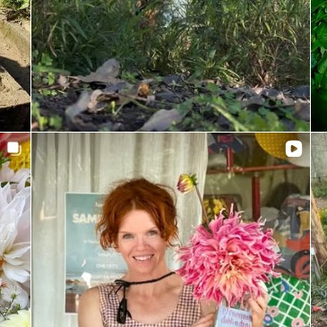
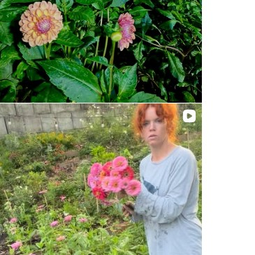

The story
A media redundancy opened the door. Angie turned the Thirroul backyard — trampoline and all — into a small flower farm.
Seasonal bunches at the gate. Sweet peas, dahlias, natives, whatever the weather lets through.

Thirroul · Dharawal Country
Fresh bunches from a backyard farm on Wrexham Road.
No plastics, no pesticides. Growing small-scale.







A media redundancy opened the door. Angie turned the Thirroul backyard — trampoline and all — into a small flower farm.
Seasonal bunches at the gate. Sweet peas, dahlias, natives, whatever the weather lets through.
Wrexham Road, Thirroul
Friday & Saturday afternoons
Follow @trampoline.flower.farm
Angie Thompson
Sometimes at Homecoming too, when the season allows.